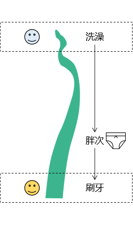

第三节 结账过程中使用事务（重要）1、事务回顾①ACID属性②隔离级别[1]并发问题[2]隔离级别2、JDBC事务控制①同一个数据库连接②关闭事务的自动提交③提交事务④回滚事务⑤事务整体的代码块3、将事务对接到书城项目中①三层架构中事务要对接的位置②假想③假想代码的缺陷④事务代码抽取⑤在Filter中获取数据库连接⑥保证所有数据库操作使用同一个连接[1]从数据源中只拿出一个[2]公共区域⑦线程本地化[1]确认同一个线程[2]一条小河[3]一个线程[4]代码[5]结论⑧异常向上抛出的线路4、代码实现①重构JDBCUtils类②重构BaseDao③创建一个用于显示通用错误信息的页面[1]创建页面[2]创建Servlet跳转到页面④创建TransactionFilter
第三节 结账过程中使用事务（重要）
1、事务回顾
①ACID属性
A：原子性 事务中包含的数据库操作缺一不可，整个事务是不可再分的。
C：一致性 事务执行之前，数据库中的数据整体是正确的；事务执行之后，数据库中的数据整体仍然是正确的。
- 事务执行成功：提交（commit）
- 事务执行失败：回滚（rollback）
I：隔离性 数据库系统同时执行很多事务时，各个事务之间基于不同隔离级别能够在一定程度上做到互不干扰。简单说就是：事务在并发执行过程中彼此隔离。
D：持久性 事务一旦提交，就永久保存到数据库中，不可撤销。
②隔离级别
[1]并发问题
| 并发问题 | 问题描述 |
|---|---|
| 脏读 | 当前事务读取了其他事务尚未提交的修改 如果那个事务回滚，那么当前事务读取到的修改就是错误的数据 |
| 不可重复读 | 当前事务读取同一个数据，第一次和第二次不一致 |
| 幻读 | 当前事务在执行过程中，数据库表增减或减少了一些记录，感觉像是出现了幻觉 |
[2]隔离级别
| 隔离级别 | 描述 | 能解决的并发问题 |
|---|---|---|
| 读未提交 | 允许当前事务读取其他事务尚未提交的修改 | 啥问题也解决不了 |
| 读已提交 | 允许当前事务读取其他事务已经提交的修改 | 脏读 |
| 可重复读 | 当前事务执行时锁定当前记录，不允许其他事务操作 | 脏读、不可重复读 |
| 串行化 | 当前事务执行时锁定当前表，不允许其他事务操作 | 脏读、不可重复读、幻读 |
2、JDBC事务控制
①同一个数据库连接

②关闭事务的自动提交
xxxxxxxxxx11connection.setAutoCommit(false);
③提交事务
xxxxxxxxxx11connection.commit();
④回滚事务
xxxxxxxxxx11connection.rollBack();
⑤事务整体的代码块
xxxxxxxxxx201try{2 3 // 关闭事务的自动提交4 connection.setAutoCommit(false);5 6 // 事务中包含的所有数据库操作7 8 // 提交事务9 connection.commit();10}catch(Excetion e){11 12 // 回滚事务13 connection.rollBack();14 15}finally{16 17 // 释放数据库连接18 connection.close();19 20}
3、将事务对接到书城项目中
①三层架构中事务要对接的位置
从逻辑上来说，一个事务对应一个业务方法（Service层的一个方法）。
②假想
每一个Service方法内部，都套用了事务操作所需要的try...catch...finally块。
③假想代码的缺陷
- 会出现大量的冗余代码：我们希望能够抽取出来，只写一次
- 对核心业务功能是一种干扰：我们希望能够在编写业务逻辑代码时专注于业务本身，而不必为辅助性质的套路代码分心
- 将持久化层对数据库的操作写入业务逻辑层，是对业务逻辑层的一种污染，导致持久化层和业务逻辑层耦合在一起
④事务代码抽取
- 只要是Filter拦截到的请求都会从doFilter()方法经过
- chain.doFilter(req, resp);可以包裹住将来要执行的所有方法
- 事务操作的try...catch...finally块只要把chain.doFilter(req, resp)包住，就能够包住将来要执行的所有方法
xxxxxxxxxx281public void doFilter(ServletRequest req, ServletResponse resp, FilterChain chain) throws ServletException, IOException {23 try{4 5 // 关闭事务的自动提交6 connection.setAutoCommit(false);78 // 『事务中包含的所有数据库操作』就在chain.doFilter(req, resp);将来要调用的方法中9 // 所以用事务的try...catch...finally块包住chain.doFilter(req, resp);10 // 就能让所有事务方法都『享受』到事务功能的『服务』。11 // 所谓框架其实就是把常用的『套路代码』抽取出来，为大家服务，我们享受框架服务提高开发效率。12 chain.doFilter(req, resp);1314 // 提交事务15 connection.commit();16 }catch(Excetion e){1718 // 回滚事务19 connection.rollBack();2021 }finally{2223 // 释放数据库连接24 connection.close();2526 }27 28}
⑤在Filter中获取数据库连接
xxxxxxxxxx311public void doFilter(ServletRequest req, ServletResponse resp, FilterChain chain) throws ServletException, IOException {23 try{4 5 // 获取数据库连接6 Connection connection = JDBCUtils.getConnection();7 8 // 关闭事务的自动提交9 connection.setAutoCommit(false);1011 // 『事务中包含的所有数据库操作』就在chain.doFilter(req, resp);将来要调用的方法中12 // 所以用事务的try...catch...finally块包住chain.doFilter(req, resp);13 // 就能让所有事务方法都『享受』到事务功能的『服务』。14 // 所谓框架其实就是把常用的『套路代码』抽取出来，为大家服务，我们享受框架服务提高开发效率。15 chain.doFilter(req, resp);1617 // 提交事务18 connection.commit();19 }catch(Excetion e){2021 // 回滚事务22 connection.rollBack();2324 }finally{2526 // 释放数据库连接27 connection.close();2829 }30 31}
⑥保证所有数据库操作使用同一个连接
『重要发现』：在书城项目中所有执行SQL语句的代码都是通过JDBCUtils.getConnection()方法获取数据库连接。所以我们可以通过重构JDBCUtils.getConnection()方法实现：所有数据库操作使用同一个连接。

[1]从数据源中只拿出一个
为了保证各个需要Connection对象的地方使用的都是同一个对象，我们从数据源中只获取一个Connection。不是说整个项目只用一个Connection，而是说调用JDBCUtils.getConnection()方法时，只使用一个。所以落实到代码上就是：每次调用getConnection()方法时先检查是否已经拿过了，拿过就给旧的，没拿过给新的。
[2]公共区域
为了保证各个方法中需要Connection对象时都能拿到同一个对象，需要做到：将唯一的对象存入一个大家都能接触到的地方。

结论：使用线程本地化技术实现Connection对象从上到下传递。
⑦线程本地化
[1]确认同一个线程
在从Filter、Servlet、Service一直到Dao运行的过程中，我们始终都没有做类似new Thread().start()这样开启新线程的操作，所以整个过程在同一个线程中。
[2]一条小河

[3]一个线程

[4]代码
java.lang.ThreadLocal的set()方法：
xxxxxxxxxx81 public void set(T value) {2 Thread t = Thread.currentThread();3 ThreadLocalMap map = getMap(t);4 if (map != null)5 map.set(this, value);6 else7 createMap(t, value);8 }java.lang.TheadLocal的get()方法：
xxxxxxxxxx131 public T get() {2 Thread t = Thread.currentThread();3 ThreadLocalMap map = getMap(t);4 if (map != null) {5 ThreadLocalMap.Entry e = map.getEntry(this);6 if (e != null) {7 ("unchecked")8 T result = (T)e.value;9 return result;10 }11 }12 return setInitialValue();13 }所以TheadLocal的基本原理是：它在内部维护了一个Map，需要存入数据时，就以this为键，要存入的数据为值，存入Map。需要取出数据时，就以this为键，从Map中取出数据。
[5]结论
如果我们需要将数据在整个项目中按照从上到下的方式传递，但是又没法通过方法的参数来实现，这时使用线程本地化技术是一个非常好的选择。
⑧异常向上抛出的线路
上图中标记颜色的位置都是有try...catch块的代码，需要逐个检查一下，catch块捕获的异常是否转换为运行时异常又再次抛出。
如果没有抛出，异常就不会传递到Filter中，TransactionFilter就会认为代码执行过程中没有发生问题，从而提交事务，但是实际上应该回滚。下面是一个例子：
xxxxxxxxxx271/**2 * 通用的批量增删改方法3 * @param sql4 * @param params 执行批量操作的二维数组5 * 每一条SQL语句的参数是一维数组6 * 多条SQL语句的参数就是二维数组7 * @return 每一条SQL语句返回的受影响的行数8 */9public int[] batchUpdate(String sql, Object[][] params) {1011 Connection connection = JDBCUtils.getConnection();1213 int[] rowCountArr = null;1415 try {16 rowCountArr = queryRunner.batch(connection, sql, params);17 } catch (SQLException e) {18 e.printStackTrace();1920 throw new RuntimeException(e);21 } finally {22 JDBCUtils.releaseConnection(connection);23 }2425 return rowCountArr;2627}
4、代码实现
①重构JDBCUtils类
- 要点1：将ThreadLocal对象声明为静态成员变量
- 要点2：重构获取数据库连接的方法
- 要点3：重构释放数据库连接的方法
xxxxxxxxxx901/**2 * 功能1：创建数据源对象3 * 功能2：获取数据库连接并绑定到当前线程上4 * 功能3：释放数据库连接并从当前线程移除5 */6public class JDBCUtils {78 // 将数据源对象设置为静态属性，保证大对象的单一实例9 private static DataSource dataSource;1011 // 将ThreadLocal对象设置为静态成员变量，保证以此为键时从Map中取值能够取到同一个值12 private static ThreadLocal<Connection> threadLocal = new ThreadLocal<>();1314 static {1516 // 1.创建一个用于存储外部属性文件信息的Properties对象17 Properties properties = new Properties();1819 // 2.使用当前类的类加载器加载外部属性文件：jdbc.properties20 InputStream inputStream = JDBCUtils.class.getClassLoader().getResourceAsStream("jdbc.properties");2122 try {2324 // 3.将外部属性文件jdbc.properties中的数据加载到properties对象中25 properties.load(inputStream);2627 // 4.创建数据源对象28 dataSource = DruidDataSourceFactory.createDataSource(properties);2930 } catch (Exception e) {31 e.printStackTrace();32 }3334 }3536 /**37 * 从数据源中获取数据库连接38 * @return 数据库连接对象39 */40 public static Connection getConnection() {4142 // 1.尝试从当前线程获取Connection对象43 Connection connection = threadLocal.get();4445 if (connection == null) {4647 try {48 // 2.如果从当前线程上没有获取到Connection对象那么从数据源获取49 connection = dataSource.getConnection();5051 // 3.将Connection对象绑定到当前线程52 threadLocal.set(connection);5354 } catch (SQLException e) {55 e.printStackTrace();5657 throw new RuntimeException(e);58 }5960 }6162 // 4.返回Connection对象63 return connection;6465 }6667 /**68 * 释放数据库连接69 * @param connection 要执行释放操作的连接对象70 */71 public static void releaseConnection(Connection connection) {7273 if (connection != null) {7475 try {76 connection.close();7778 // 将Connection对象从当前线程移除79 threadLocal.remove();8081 } catch (SQLException e) {82 e.printStackTrace();8384 throw new RuntimeException(e);85 }8687 }8889 }90}
②重构BaseDao
- 要点：去除释放数据库连接的操作（转移到TransactionFilter中）
xxxxxxxxxx1311/**2 * 各个具体Dao类的基类，泛型T对应具体实体类类型3 * @param <T>4 */5public class BaseDao<T> {67 private QueryRunner queryRunner = new QueryRunner();89 /**10 * 通用的批量增删改方法11 * @param sql12 * @param params 执行批量操作的二维数组13 * 每一条SQL语句的参数是一维数组14 * 多条SQL语句的参数就是二维数组15 * @return 每一条SQL语句返回的受影响的行数16 */17 public int[] batchUpdate(String sql, Object[][] params) {1819 Connection connection = JDBCUtils.getConnection();2021 int[] rowCountArr = null;2223 try {24 rowCountArr = queryRunner.batch(connection, sql, params);25 } catch (SQLException e) {26 e.printStackTrace();2728 throw new RuntimeException(e);29 }/* finally {30 JDBCUtils.releaseConnection(connection);31 }*/3233 return rowCountArr;3435 }3637 /**38 * 通用的增删改方法39 * @param sql 要执行的SQL语句40 * @param param 为SQL语句准备好的参数41 * @return 受影响的行数42 */43 public int update(String sql, Object ... param) {4445 int updatedRowCount = 0;4647 Connection connection = JDBCUtils.getConnection();4849 try {5051 updatedRowCount = queryRunner.update(connection, sql, param);5253 }54 // 为了让上层方法调用方便，将编译时异常捕获55 catch (SQLException e) {56 e.printStackTrace();5758 // 为了不掩盖问题，将编译时异常封装为运行时异常抛出59 throw new RuntimeException(e);60 }/* finally {6162 // 关闭数据库连接63 JDBCUtils.releaseConnection(connection);6465 }*/6667 return updatedRowCount;6869 }7071 /**72 * 查询单个对象73 * @param clazz 单个对象所对应的实体类类型74 * @param sql 查询单个对象所需要的SQL语句75 * @param param SQL语句的参数76 * @return 查询到的单个对象77 */78 public T getBean(Class<T> clazz, String sql, Object ... param) {7980 Connection connection = JDBCUtils.getConnection();8182 T t = null;8384 try {8586 t = queryRunner.query(connection, sql, new BeanHandler<>(clazz), param);87 } catch (SQLException e) {88 e.printStackTrace();8990 throw new RuntimeException(e);91 }/* finally {9293 // 关闭数据库连接94 JDBCUtils.releaseConnection(connection);9596 }*/9798 return t;99 }100101 /**102 * 查询集合对象103 * @param clazz 集合中单个对象所对应的实体类类型104 * @param sql 查询集合所需要的SQL语句105 * @param param SQL语句的参数106 * @return 查询到的集合对象107 */108 public List<T> getBeanList(Class<T> clazz, String sql, Object ... param) {109110 Connection connection = JDBCUtils.getConnection();111112 List<T> list = null;113114 try {115116 list = queryRunner.query(connection, sql, new BeanListHandler<>(clazz), param);117 } catch (SQLException e) {118 e.printStackTrace();119120 throw new RuntimeException(e);121 }/* finally {122123 // 关闭数据库连接124 JDBCUtils.releaseConnection(connection);125126 }*/127128 return list;129 }130131}注意：OrderDao中insertOrder()方法也要去掉关闭数据库连接的操作。
xxxxxxxxxx451public void insertOrder(Order order) {34 // ※DBUtils没有封装获取自增主键的方法，需要我们使用原生的JDBC来完成5 // 1.获取数据库连接6 Connection connection = JDBCUtils.getConnection();78 // 2.创建PreparedStatement对象9 String sql = "INS222ERT INTO t_order(order_sequence,create_time,total_count,total_amount,order_status,user_id) VALUES(?,?,?,?,?,?)";1011 try {1213 // ①创建PreparedStatement对象，指明需要自增的主键14 PreparedStatement preparedStatement = connection.prepareStatement(sql, PreparedStatement.RETURN_GENERATED_KEYS);1516 // ②给PreparedStatement对象设置SQL语句的参数17 preparedStatement.setString(1, order.getOrderSequence());18 preparedStatement.setString(2, order.getCreateTime());19 preparedStatement.setInt(3, order.getTotalCount());20 preparedStatement.setDouble(4, order.getTotalAmount());21 preparedStatement.setInt(5, order.getOrderStatus());22 preparedStatement.setInt(6, order.getUserId());2324 // ③执行更新25 preparedStatement.executeUpdate();2627 // ④获取封装了自增主键的结果集28 ResultSet generatedKeysResultSet = preparedStatement.getGeneratedKeys();2930 // ⑤解析结果集31 if (generatedKeysResultSet.next()) {32 int orderId = generatedKeysResultSet.getInt(1);3334 order.setOrderId(orderId);35 }3637 } catch (SQLException e) {38 e.printStackTrace();3940 throw new RuntimeException(e);41 } /*finally {42 JDBCUtils.releaseConnection(connection);43 }*/4445}
③创建一个用于显示通用错误信息的页面
[1]创建页面
这个页面可以从login_success.html复制过来
[2]创建Servlet跳转到页面
xxxxxxxxxx71protected void showSystemError(HttpServletRequest request, HttpServletResponse response) throws ServletException, IOException {23 String viewName = "error";45 processTemplate(viewName, request, response);67}
④创建TransactionFilter
xxxxxxxxxx81<filter>2 <filter-name>TransactionFilter</filter-name>3 <filter-class>com.atguigu.bookstore.filter.TransactionFilter</filter-class>4</filter>5<filter-mapping>6 <filter-name>TransactionFilter</filter-name>7 <url-pattern>/*</url-pattern>8</filter-mapping>Java代码如下：
xxxxxxxxxx781public class TransactionFilter implements Filter {23 private static final Set<String> PUBLIC_STATIC_RESOURCE_EXT_NAME_SET = new HashSet<>();45 static {6 PUBLIC_STATIC_RESOURCE_EXT_NAME_SET.add(".png");7 PUBLIC_STATIC_RESOURCE_EXT_NAME_SET.add(".css");8 PUBLIC_STATIC_RESOURCE_EXT_NAME_SET.add(".js");9 PUBLIC_STATIC_RESOURCE_EXT_NAME_SET.add(".jpg");10 PUBLIC_STATIC_RESOURCE_EXT_NAME_SET.add(".gif");11 }1213 public void doFilter(ServletRequest req, ServletResponse resp, FilterChain chain) throws ServletException, IOException {1415 // 排除掉静态资源，它们和数据库操作没有关系16 // 1.给请求和响应对象转换类型17 HttpServletRequest request = (HttpServletRequest) req;18 HttpServletResponse response = (HttpServletResponse) resp;1920 // 2.获取当前请求的ServletPath21 String servletPath = request.getServletPath();2223 // 3.检查servletPath中是否包含“.”24 if (servletPath.contains(".")) {2526 int index = servletPath.lastIndexOf(".");2728 String extensionName = servletPath.substring(index);2930 if (PUBLIC_STATIC_RESOURCE_EXT_NAME_SET.contains(extensionName)) {31 chain.doFilter(request, response);3233 return ;34 }35 }3637 // 执行事务操作38 // 1.获取数据库连接39 Connection connection = JDBCUtils.getConnection();4041 // 2.使用try...catch...finally块管理事务42 try{4344 // 3.关闭事务的自动提交45 connection.setAutoCommit(false);4647 // 4.尝试执行目标代码48 chain.doFilter(request, response);4950 // 5.如果上面的操作没有抛出异常51 connection.commit();5253 }catch (Exception e){5455 // 6.如果上面的操作抛出了异常56 try {57 connection.rollback();58 } catch (SQLException e1) {59 e1.printStackTrace();60 }6162 // 7.捕获到异常后，跳转到专门的页面显示提示消息63 String message = e.getMessage();64 request.setAttribute("error", message);65 request.getRequestDispatcher("/ErrorServlet?method=showSystemError").forward(request, response);6667 }finally {6869 // 8.不管前面操作是成功还是失败，到这里都要释放数据库连接70 JDBCUtils.releaseConnection(connection);7172 }7374 }7576 public void init(FilterConfig config) throws ServletException {}77 public void destroy() {}78}